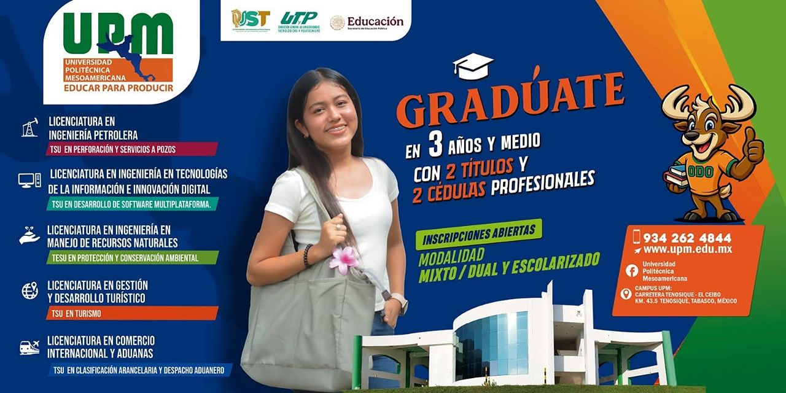

Oferta Educativa
Conoce nuestros programas académicos diseñados bajo el modelo educativo basado en competencias, orientados a la innovación, el desarrollo regional y la excelencia profesional.

En la Universidad Politécnica Mesoamericana podrás obtener primero el grado de Técnico Superior Universitario (TSU) y posteriormente continuar tus estudios para obtener el título de Licenciatura o Ingeniería. Nuestro modelo educativo permite a los estudiantes graduarse en aproximadamente 3 años y medio con dos títulos profesionales, fortaleciendo su formación académica y sus oportunidades en el ámbito laboral.

Ingeniería en Tecnologías de la Información e Innovación Digital
TSU en Desarrollo de Software Multiplataforma

Ingeniería en Manejo de Recursos Naturales
TSU en Protección y Conservación Ambiental

Ingeniería Petrolera
TSU en Perforación y Servicios a Pozos
Licenciatura en Gestión y Desarrollo Turístico
TSU en Turismo

Licenciatura en Comercio Internacional y Aduanas
TSU en Clasificación Arancelaria y Despacho Aduanero